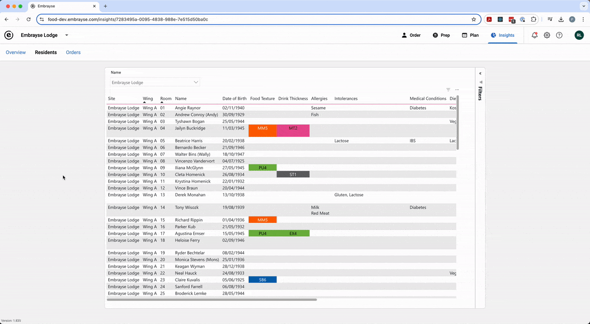
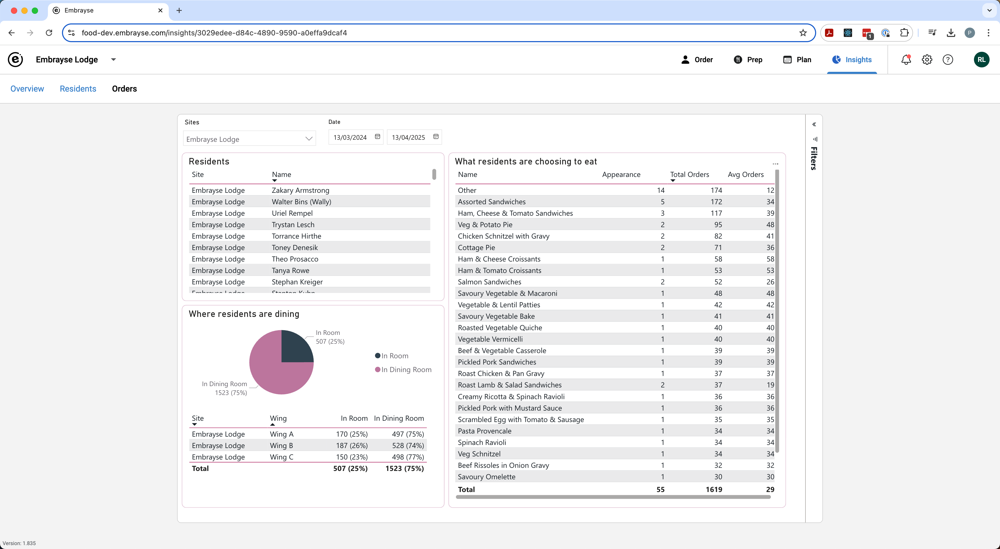
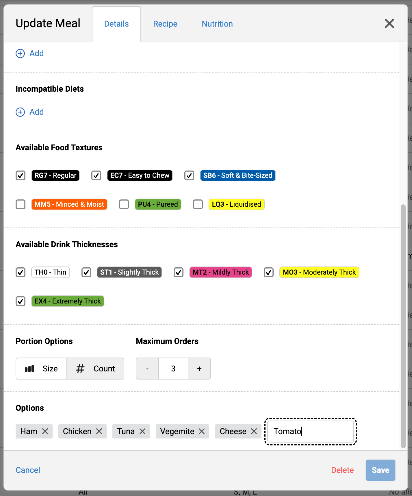
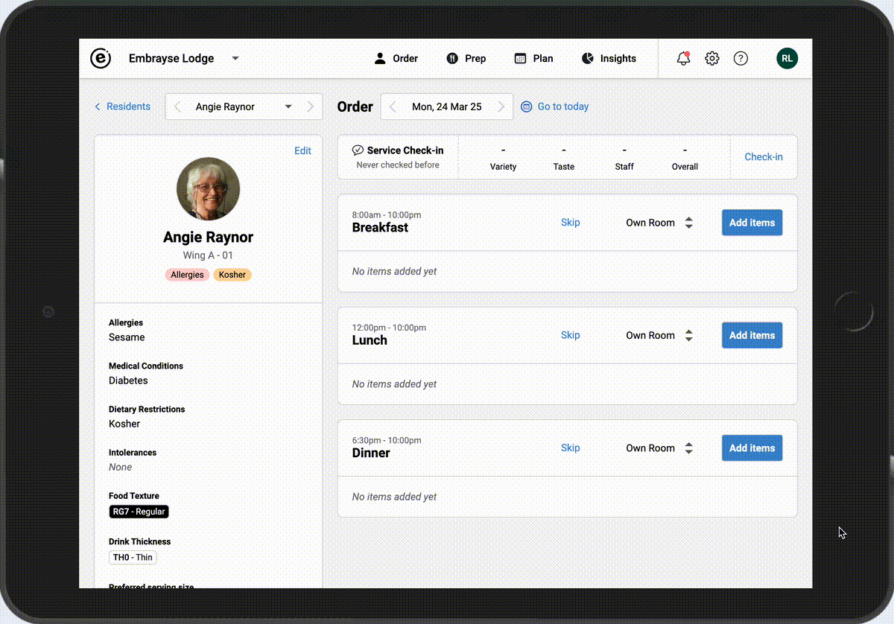
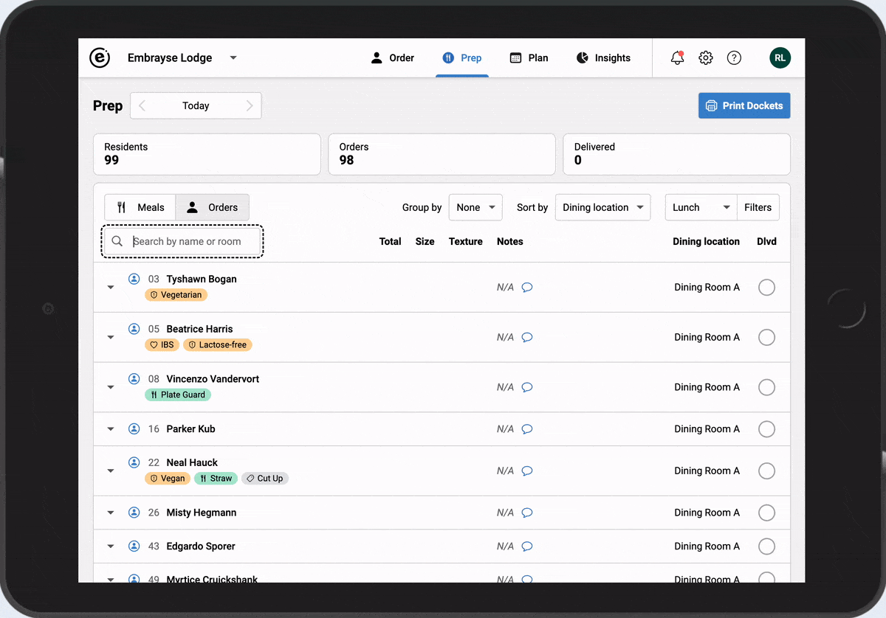

Release 2025.1 – Reports, Meal Options, Viewer Role and more
We are excited to share a summary of exciting new functionality in Embrayse, some of which you may already have noticed in the app.
Embrayse Reports
The new reporting functionality has been available to select users for some time, and is now generally available to all our customers and providers. The Residents report provides a snapshot of dietary requirements with flexible filtering, and the Orders report takes things one step further, giving an overview of the resident dining choices over any period of time, and across any number of facilities. Reports integrate with Power BI for deeper analysis. Currently the reports are accessible Mon to Fri between 7:00am and 7:00pm AEST.


Meal Options
You can now give a menu item any number of options, which can be selected when ordering that item. This is a new way to offer your residents even more choice in how they would like their meals, while saving your staff valuable time.


Improved Resident Search
All resident search boxes now support searching not only by name, but also by room number.

Viewer Role
A user with the new Viewer role is able to view most information in Embrayse, such as resident details, orders, feedback, and reports, but without the ability to make any changes. This is ideal for head office staff, dietitians, and auditors.
Other Improvements and Bug Fixes
- Added allergens: Mushroom, Mango, Turmeric, Chilli, and Paprika.
- Added utensil: Plate Guard.
- The Notes field is now visible for all menu items without having to open the Customise modal.
- Focus is automatically placed in the Notes field when the modal opens.
- Improvements to the recipe print view.
- Room numbers are now displayed alongside resident names on the Prep report and dockets.
- Enhanced support for multiple simultaneously logged-in users.
- Preferred Serving Size is now optional in the customer API.
- Fixed: Integration updates could create duplicate resident records.
- Fixed: The Content Manager role encountered an error when uploading TV posters.
- Fixed: API credential access is now correctly restricted to Super Admins.
- Fixed: Renaming a sub-group removed all residents from it.
- Fixed: Resident search infinite loop, delivery checkmarks, order status indicators, Regular Item date picker cropping, and Insights date dropdown positioning.
Want to see Embrayse in action?